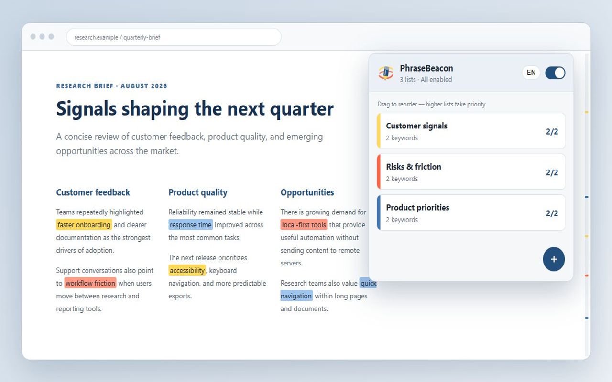
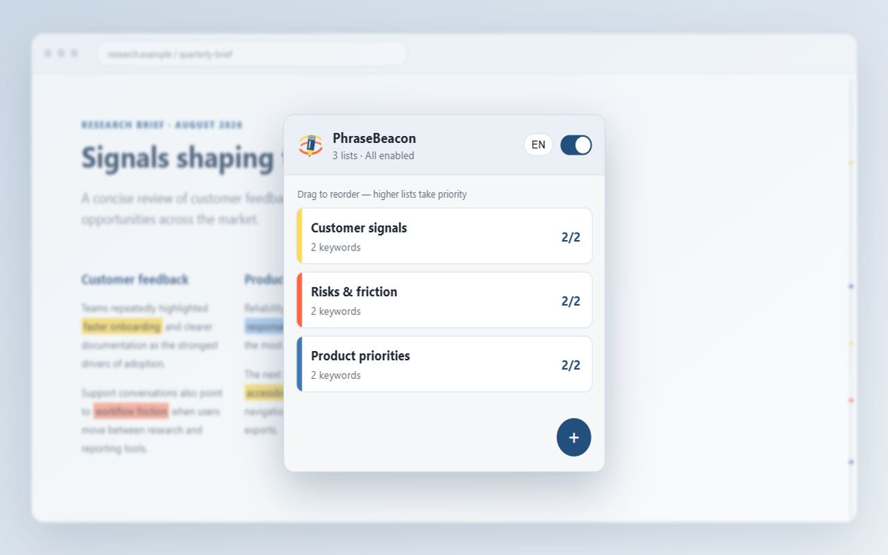

Highlight multiple words on any webpage
PhraseBeacon finds every keyword you care about and marks it in color, so the important parts of a long page jump out instantly.
No account. No tracking. Everything runs on your device.

Made for everyday reading
Anywhere you scan long pages for the same words again and again, PhraseBeacon does the looking for you.
Spot what matters in every job post
Fully remote role, React experience, competitive salary.
Check ingredients at a glance
Contains wheat, peanuts, and soy. May contain milk.
Track key terms across articles
Results suggest sleep quality affects memory more than duration.
Never miss the clauses that count
You may cancel within 30 days. Auto-renewal applies after.
How it works
Set it up once. After that, just browse.
-
Add PhraseBeacon
Install it from the Chrome Web Store and pin the icon to your toolbar.
-
Create a list
Name it, pick a color, and type or paste your keywords.
-
Browse as usual
Matching words light up on every page, and the icon shows how many were found.
Everything you need, nothing you don't
- Highlight many keywords at once, grouped into color-coded lists
- Choose highlight and text colors, with a live preview
- Turn each list on or off, or pause everything with one switch
- Case-sensitive, whole-word, and regular-expression matching
- Match count on the toolbar icon for the current page
- Jump to the previous or next match with one click
- A page minimap shows where every match is
- Keeps up with infinite scroll and single-page apps
- Import lists from CSV, back up and restore with JSON
- Interface in English and Traditional Chinese

Private by design
- Runs entirely on your device
- No account or sign-up
- No servers, analytics, or ads
- Page text is never stored or sent
Your keyword lists live in your browser's local extension storage. PhraseBeacon reads the visible text of the page you are on only to find your keywords, and skips form fields, password fields, and areas you are editing.
Frequently asked questions
How do I highlight multiple words on a webpage in Chrome?
Install PhraseBeacon, click its toolbar icon, create a list, add your words, and save. Every matching word on the pages you visit is highlighted automatically, and each list can use its own color.
Is PhraseBeacon free?
Yes. PhraseBeacon is free, with no account and no paid tier.
Does PhraseBeacon send my data anywhere?
No. Webpage text is processed on your device only to find matches, and is not stored or transmitted. Your keyword lists are saved in your browser's local extension storage. There are no servers, analytics, ads, or tracking.
Why does PhraseBeacon need access to all websites?
To highlight your keywords wherever you browse, PhraseBeacon has to read the visible text of the page you are viewing. That text is checked locally and never leaves your device. Form fields, password fields, and areas you are currently editing are skipped.
Can I use regular expressions or match whole words only?
Yes. Each list can be case-sensitive, match whole words only, or use regular expressions.
Does it work on pages that load more content as I scroll?
Yes. PhraseBeacon highlights new content as it appears, including infinite scroll and single-page apps, without rescanning the whole page.
Can I import a long list of keywords?
Yes. Paste many keywords at once, one per line or separated by commas, or import lists from a CSV file where each column becomes a list. You can also back up and restore everything with a JSON file.
Where does PhraseBeacon not work?
Chrome does not allow extensions to run on its own pages, such as chrome:// settings pages and the Chrome Web Store, or inside Chrome's built-in PDF viewer, so highlights cannot appear there.
Something else? Visit the support page.